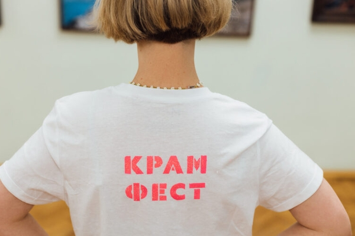

Фестиваль КРАМ*ФЕСТ пройдет в музее им. И.Н. Крамского
27 сентября с 10:00 до 20:00 в музее состоится фестиваль КРАМ*ФЕСТ (12+), который в этом году становится уникальной платформой для диалога и сотрудничества между художниками, кураторами, медиаторами и зрителями Центрально-Черноземного региона.
Главным событием фестиваля станет междисциплинарная выставка «Состав почвы», посвященная символике земли как опоры, ресурса и носителя памяти, формирующей культурный код Черноземья. Экспозиция раскрывает, как образ почвы отражается в актуальном искусстве и влияет на восприятие региона через призму художественных и социокультурных практик.
Подробная программа фестиваля:
Выставочный зал музея. Второй этаж:
- 10:00–20:00 – КРАМтека «Читаем искусство»
- 11:00–19:00 – ЯРМАРКА МАСТЕРОВ
В зоне «КРАМтеки» гостям фестиваля будет представлена избранная литература, периодические издания, каталоги выставок из фондов библиотеки ВОХМ в свободном доступе для чтения. Более 100 экземпляров, включающих отечественные и зарубежные издания, посвященные вопросам искусства, каталоги выставок XX-XXI веков, а также, иллюстрированные альбомы, посвященные творчеству живописцев с мировым именем, периодические издания, посвященные жизни Воронежа.
Отдельно, в виде экспонатов, будут представлены редкие издания из фонда библиотеки: Альфред Михилс «Ван Дейк и его ученики». Второе издание. Париж, 1882 г.; «Галерея Петра Великого в Императорской Публичной библиотеке». Санкт-Петербург. 1903 г.; «Альбом выставки картин из частных собраний, организованной в Москве в 1892 году в пользу пострадавших от неурожая». Москва, 1892 г. и др.
Ярмарка мастеров станет значимой частью фестивальной программы, объединяя представителей традиционного и современного декоративно-прикладного искусства Черноземья. Посетителям будут представлены изделия из дерева, керамики, металла, текстиля, отражающие сохранение и развитие народных ремесленных традиций. Формат ярмарки позволит познакомиться с подлинным мастерством, приобрести авторские работы и поддержать развитие региональной культуры.